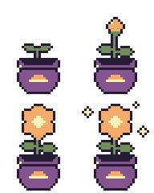
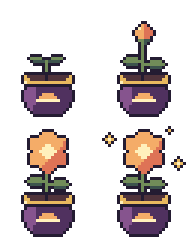
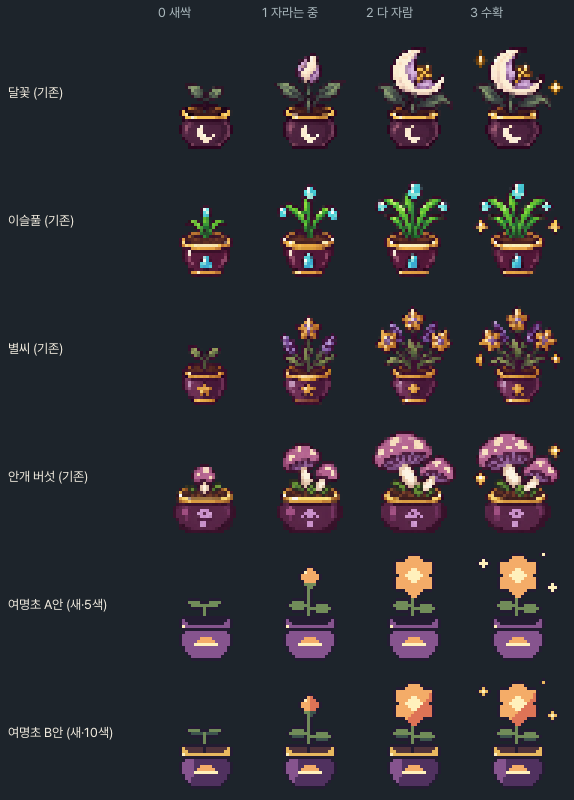
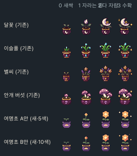
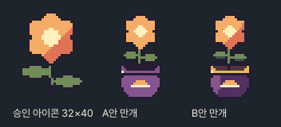
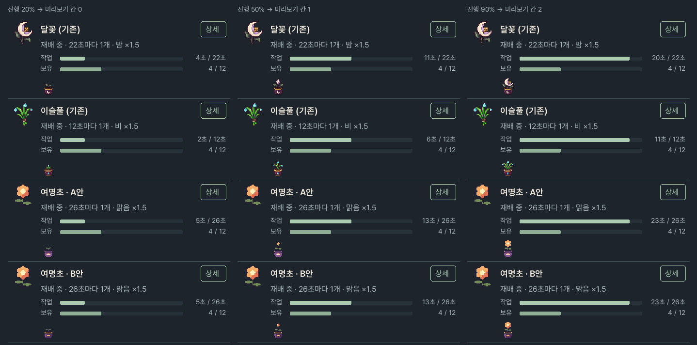

여명초(dawn_bloom) 화분 성장 그림 후보 v1
2026-11-05 · 상태 후보(candidate) · 게임 미연결 · 승인 전. 승인되면 assets/content_expansion_v1/catalog.json의 여명초 행에
growth_path: res://assets/content_expansion_v1/materials/dawn_bloom_growth.png만 더한다.
source/*.txt → tools/process_pixel_art.py. 체크무늬는 CSS 배경이다.1. 후보 A / B · 단계별 3배
A안 · 규칙 엄수 (5색)

승인 24색·물체당 5색·반투명 0·1픽셀 외곽선을 모두 지킨다. 화분은 승인된 작업실 약초 화분(assets/pixel_v1/props/herb.png)과 같은 자두 보라 #86548E 한 색(금테·흙·밝은 면 없음, 흙은 외곽선색)이라 기존 9종의 어두운 화분보다 밝다. 꽃은 귤빛 한 색 + 크림 꽃심이라 아이콘의 산호색 오른쪽 아래 그늘이 빠진다.
5색 · 팔레트 밖 0 · 반투명 0 · 외곽선 위반 0 · 디더링 0 · 램프별 단계 outline 1, purple 1, gold 1, fire 1, leaf 1 · 모든 칸 바닥 행 38 예 · 화분 4칸 동일 예 · 판정 passed
B안 · 기존 성장 그림과 어울림 우선 (10색)

승인 24색·반투명 0·1픽셀 외곽선·램프당 3단계 이하는 지킨다. 기존 9종 화분처럼 어두운 가지 보라 몸통(#50315F)+왼쪽 밝은 면(#86548E)·금테·흙·테 아래 어두운 줄을 넣고 꽃은 아이콘과 같은 귤빛/산호 그늘/크림 꽃심. 물체당 5색 상한을 넘으므로(10색) 사용자 승인이 필요한 예외다.
10색 · 팔레트 밖 0 · 반투명 0 · 외곽선 위반 0 · 디더링 0 · 램프별 단계 outline 1, purple 2, gold 2, wood 1, leaf 2, fire 2 · 모든 칸 바닥 행 38 예 · 화분 4칸 동일 예 · 판정 passed_except_five_colour_limit (사용자 승인 필요)
2. 기존 성장 그림과 나란히 (관리 화면 배경 #1D242B, 3배)

원본 1배 비교: growth-compare-native.png

3. 다 자란 꽃 대 승인된 여명초 아이콘

아이콘의 여섯 꽃잎 실루엣(위·좌우 위·좌우 아래·아래 꽃잎과 양옆 홈), 크림색 육각 꽃심을 16×15로 줄였다. 아이콘의 줄기는 외곽선색(#241C32) 2픽셀이지만 관리 화면 배경(#1D242B)에서는 보이지 않아 꽃이 떠 보였으므로, 성장 그림에서는 세이지 잎색(#718C59) 1픽셀 줄기에 양옆 외곽선을 둘렀다(기존 성장 그림도 초록 줄기). B안은 아이콘처럼 오른쪽 아래가 산호색(#DE7356) 그늘, A안은 5색 제한 때문에 귤빛 한 색이다. 화분 앞 문양은 해돋이(귤빛 반원과 빛살)로, 다른 화분이 재료 색 문양(달·물방울·별)을 쓰는 방식과 같다.
4. 관리 · 약초 탭 행에 넣었을 때 (원본 1배 · 근사)
관리 · 약초 탭 _row 근사: 패널 폭 458(CONTENT_WIDTH 480−22), 여백 8, 왼쪽 48×48 아이콘(readable_icon으로 여백을 자른 뒤 KEEP_ASPECT 최근접 확대), 제목 18 SemiBold·상세 버튼 52×32, 상태 줄 16, 작업/보유 막대(높이 7), 그 아래 성장 미리보기 TextureRect 32×40(원본 1배, 상세를 펼쳤을 때). 글자·막대 위치는 Python 근사이며 Godot 실제 캡처가 아니다.

2배 확대본: management-herbs-rows-2x.png
5. 형식 비교 수치
| 시트 | 크기 | RGB 색 수 | 반투명 픽셀 | 칸별 바닥 행 | 화분(행 24~38) x 범위, 칸 0/1/2/3 |
|---|---|---|---|---|---|
| herb | 64×80 | 1959 | 2629 | 38, 38, 38, 38 | 4~27 / 4~27 / 3~25 / 2~25 |
| starleaf | 64×80 | 1445 | 1783 | 38, 38, 38, 38 | 9~22 / 9~22 / 5~25 / 5~25 |
| dewgrass | 64×80 | 1684 | 1888 | 38, 38, 38, 38 | 7~24 / 6~23 / 6~24 / 3~28 |
| silver_moss | 64×80 | 1346 | 1805 | 38, 38, 38, 38 | 6~25 / 6~25 / 5~24 / 7~26 |
| blue_reed | 64×80 | 1590 | 1851 | 38, 38, 38, 38 | 7~23 / 6~22 / 6~24 / 7~24 |
| crystal_herb | 64×80 | 1431 | 1625 | 38, 38, 38, 38 | 7~23 / 7~23 / 6~24 / 7~25 |
| mist_mushroom | 64×80 | 1642 | 2302 | 38, 38, 38, 38 | 5~25 / 5~26 / 5~26 / 5~26 |
| ash_sage | 64×80 | 1746 | 2122 | 38, 38, 38, 38 | 7~23 / 6~22 / 7~28 / 6~27 |
| moonflower | 64×80 | 1701 | 2042 | 38, 38, 38, 38 | 7~24 / 7~24 / 7~28 / 5~26 |
| star_seed | 64×80 | 1690 | 1860 | 38, 38, 38, 38 | 8~22 / 7~22 / 6~24 / 2~29 |
| 여명초 A안 | 64×80 | 5 | 0 | 38, 38, 38, 38 | 7~24 / 7~24 / 7~24 / 7~24 |
| 여명초 B안 | 64×80 | 10 | 0 | 38, 38, 38, 38 | 7~24 / 7~24 / 7~24 / 7~24 |
6. 결정 필요
- A안(5색 규칙 엄수)과 B안(10색, 기존 9종 화분과 같은 금테·흙·그늘 · 물체당 5색 상한 예외) 중 하나. B안을 고르면 예외 사유와 승인을
art/palette-log.md에 기록한다. - 꽃봉오리 단계(칸 1)의 잎을 다 자란 단계와 같게 둔 것, 수확 반짝임 3개의 위치.
- 연결 시
tools/verify_f26_region_potions.gd의 "No growth sheet stand-in for dawn bloom" 검사와tools/verify_workshop_followup.gd의 여명초 예외를 함께 고쳐야 한다.
검사 결과: validation.json · 후처리 보고: pipeline/a/validation.json, pipeline/b/validation.json · 승인 상태: approval.json